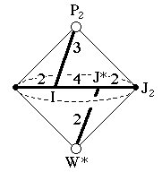
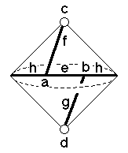

221
221
 223
223 Orbifold Atlas Home Page
Orbifold Atlas Home Page
 Crystallographic Topology Home Page
Crystallographic Topology Home Page
Underlying Topological Space: RP2 double suspension; Figure Pseudo-Symmetry (FPS): m
Euclidean 3-Orbifold with Invariant-Lattice-Complex Letters
(left), Wyckoff Site Letters (right)
 
| FPS | Mult | Lattice Comp | Group Graph | Wyckoff Set | 2[4]Cover |
| 2-1 | I | 432 | a | ||
| 6-1 | J* | 422 | b | ||
| 8-1 | P2 | 30 | c | ||
| 12-1 | W* | 20 | d | ||
| 12-1 | I6[-]J*2 | 32<4>22 | e:a-b | ||
| 16-1 | I8[-]P22 | 42<3>0 | f:a-c | ||
| 24-1 | J*4[-]W*2 | 42<2>0 | g:b-d | ||
| 24-1 | I12[J2]J*4 | 43<2>42 | h:b-a | ||
| 48 | 1 | i:efgh | |||
| 48-1 | P26[-]J22 | 2*=30<1>22 | i1:c-d | [#226(e? or f?)] | |
| m | 48-2 | m* | i2:fgeh | #229(j,k) | |
| Struct-Mult | Critical Points | Heegaard Surf | Wyckoff Cut |
| BCC -1 | I/P2/W*/J* | HP2 420{1} | e h |
221
223
Orbifold Atlas Home Page
Crystallographic Topology Home Page
Page last revised: